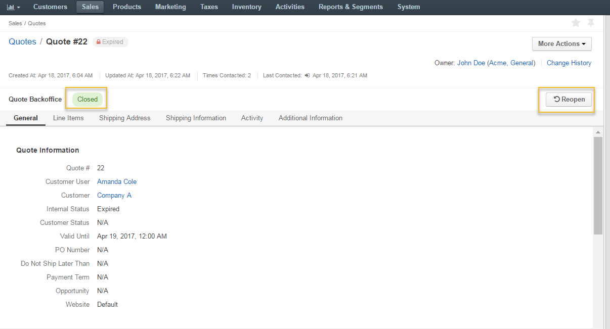

Quote Management Flow¶
Overview¶
Quote Management Flow (QBW) is a system workflow that defines a sequence of steps and transitions that a quote can go through as a deal progresses.
Note
The difference between the simple Quote Management Flow and the one with approval is covered in the Understanding Quote Workflows section.
To reach the workflow:
- Navigate to System > Workflows in the main menu.
- Click Quote Management Flow to open the flow. The following page opens:

Note
Since Quote Management Flow is a system workflow, it cannot be edited or deleted.
On the Quote Management Flow page, you can perform the following actions:
- Deactivate the workflow - click Deactivate to deactivate the workflow.
Statuses¶
When the QMF is active, the following statuses are available:
- Internal Statuses are the statuses displayed in OroCommerce to the sales personnel:
- Draft
- Sent to Customer
- Expired
- Accepted
- Declined
- Deleted
- Cancelled

- Customer Statuses are the statuses displayed to customers in the storefront:
- Open
- Expired
- Accepted
- Declined
Note
These statuses cannot be edited or deleted.
Steps and Transitions¶
The QMF consists of the following steps and transitions:
- Steps:
- Draft
- Sent to Customer
- Closed
- Deleted
- Transitions:
- For Draft: Edit, Clone, Delete, Send to Customer
- For Sent to Customer: Cancel, Expire, Delete, Create New Quote, Accept, Decline, Declined by Customer
- For Closed: Reopen
- For Deleted: Undelete

Note
Please note that Accepted and Declined transitions for the Sent to Customer step are automatically triggered by the changes of customer statuses and they do not, therefore, take the form of buttons in the interface.
Example¶
As an illustration, let us go through a sample flow to see the QMF in action:
Once a quote is created, it is automatically moved to the Draft step with the possibility to edit, clone, delete and send the quote to a customer.

The quote with an offer valid until 19 April is sent to a customer.

The quote transitions from Draft state into Sent to Customer. Now it is possible to cancel, expire, delete, create a quote, or mark it as declined by customer.

Note
If a customer generates an order based on the quote, you can leave the quote in the Sent to Customer state so that customer user could reuse it for future orders, or expire it to disable orders based on this quote.
- The customer provided no feedback on the quote before 19 April, and the quote is expired by the sales personnel, leaving it in the Closed step.

- The offer has been reconsidered and validation date was extended until 21 April. The quote is reopened. It is moved back to the draft step with the possibility to edit, clone, delete and send the quote to a customer. The quote number is changed (in our case, from 22 to 23).